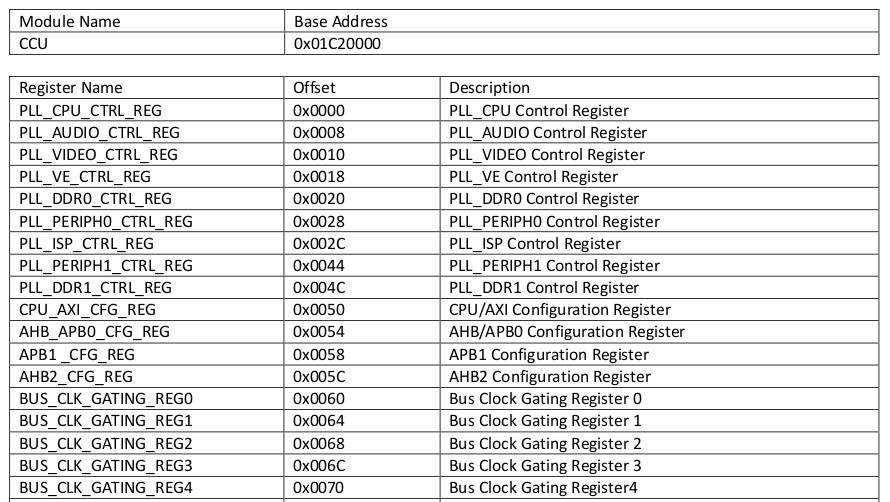
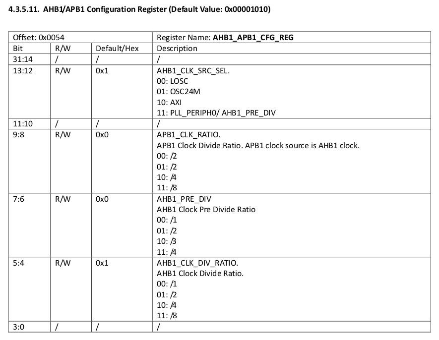
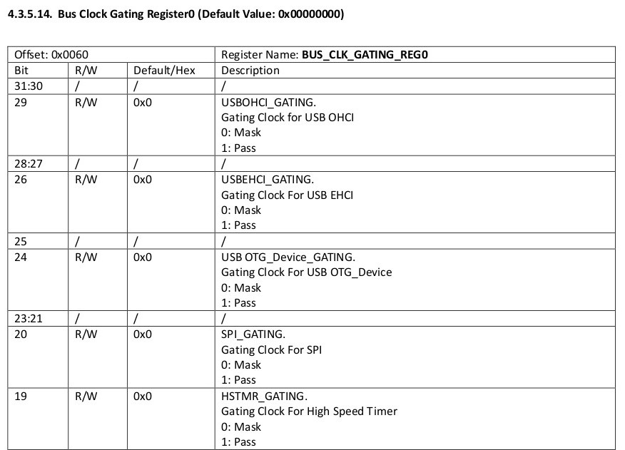
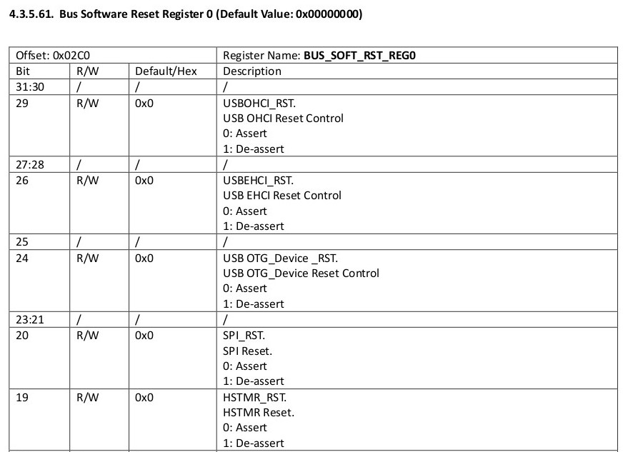
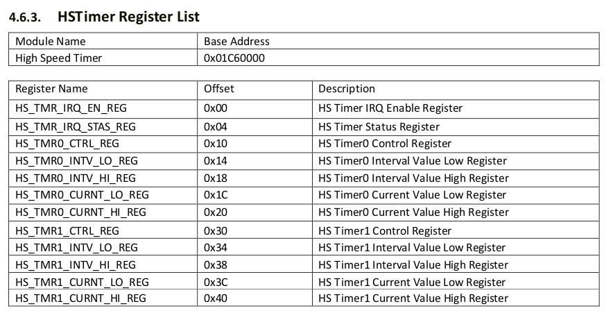
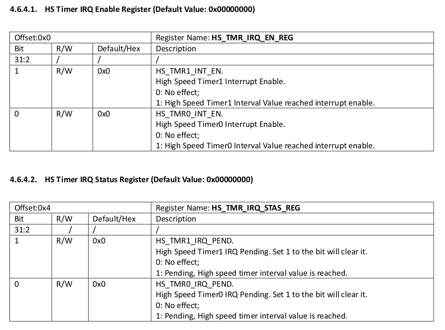
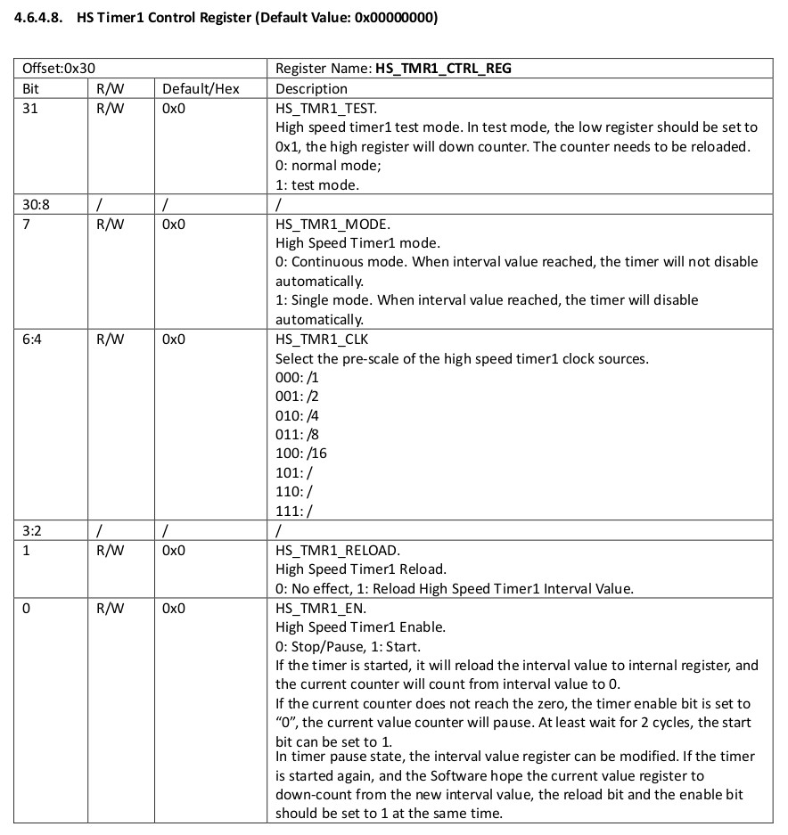
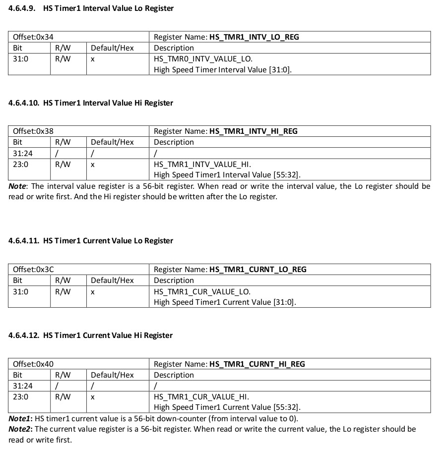

CCU位址








.global _start
.equ CCU_BASE, 0x01c20000
.equ GPIO_BASE, 0x01c20800
.equ HSTMR_BASE, 0x01c60000
.equ PG, (0x24 * 6)
.equ CFG0, 0x00
.equ DATA, 0x10
.equ PLL_CPU_CTRL_REG, 0x00
.equ CPU_AXI_CFG_REG, 0x50
.equ AHB1_APB1_CFG_REG, 0x54
.equ BUS_CLK_GATING_REG0, 0x60
.equ BUS_SOFT_RST_REG0, 0x2c0
.equ HS_TMR_IRQ_STAS_REG, 0x04
.equ HS_TMR1_CTRL_REG, 0x30
.equ HS_TMR1_INTV_LO_REG, 0x34
.equ HS_TMR1_INTV_HI_REG, 0x38
.equ HS_TMR1_CURNT_LO_REG, 0x3c
.equ HS_TMR1_CURNT_HI_REG, 0x40
.arm
.text
_start:
.long 0xea000016
.byte 'e', 'G', 'O', 'N', '.', 'B', 'T', '0'
.long 0, __spl_size
.byte 'S', 'P', 'L', 2
.long 0, 0
.long 0, 0, 0, 0, 0, 0, 0, 0
.long 0, 0, 0, 0, 0, 0, 0, 0
_vector:
b reset
b .
b .
b .
b .
b .
b .
b .
reset:
ldr r0, =CCU_BASE
ldr r1, =(1 << 31) | (12 << 8)
str r1, [r0, #PLL_CPU_CTRL_REG]
1:
ldr r1, [r0, #PLL_CPU_CTRL_REG]
tst r1, #(1 << 28)
beq 1b
ldr r1, =(3 << 16)
str r1, [r0, #CPU_AXI_CFG_REG]
ldr r1, =(2 << 12)
str r1, [r0, #AHB1_APB1_CFG_REG]
ldr r1, =(1 << 19)
str r1, [r0, #BUS_CLK_GATING_REG0]
str r1, [r0, #BUS_SOFT_RST_REG0]
ldr r0, =GPIO_BASE
ldr r1, =1
str r1, [r0, #(PG + CFG0)]
ldr r1, =1
str r1, [r0, #(PG + DATA)]
ldr r2, =HSTMR_BASE
ldr r3, =408000000
str r3, [r2, #HS_TMR1_INTV_LO_REG]
str r3, [r2, #HS_TMR1_CURNT_LO_REG]
ldr r3, =0x00000000
str r3, [r2, #HS_TMR1_INTV_HI_REG]
str r3, [r2, #HS_TMR1_CURNT_HI_REG]
ldr r3, =(1 << 1) | (1 << 0)
str r3, [r2, #HS_TMR1_CTRL_REG]
ldr r4, =(1 << 0)
1:
ldr r3, [r2, #HS_TMR_IRQ_STAS_REG]
tst r3, #(1 << 1)
beq 1b
str r3, [r2, #HS_TMR_IRQ_STAS_REG]
eor r1, r4
str r1, [r0, #(PG + DATA)]
b 1b
.end
完成